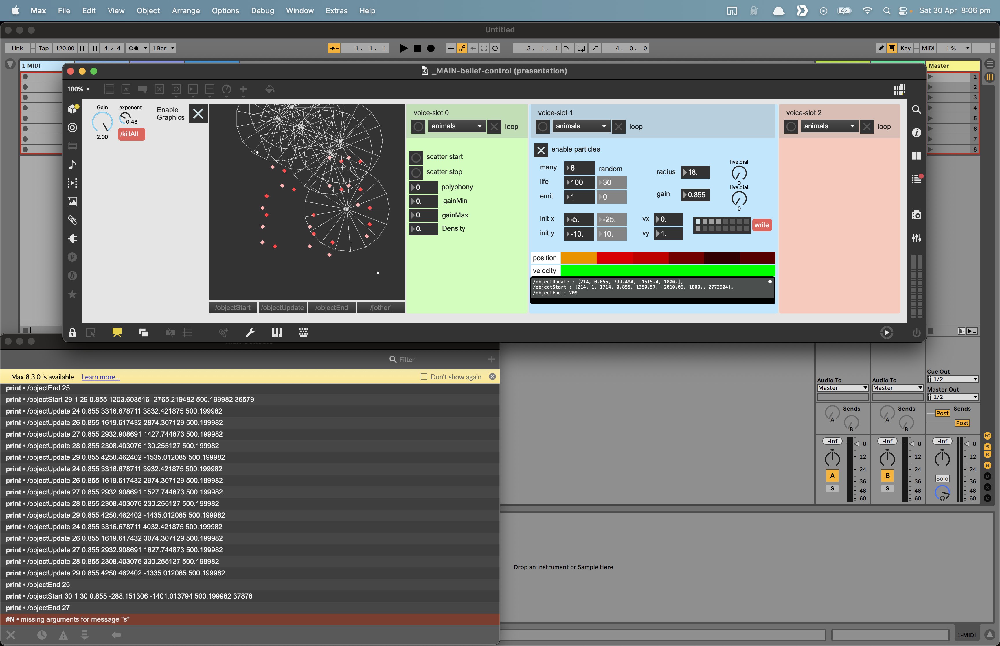

Continuing work on a system I was exploring earlier here [ composing with particles], I was working with TouchDesigner. Here I have moved to Max using its native particle system: [jit.shiva] and [jit.vishnu]. The patch processes the particle matrix to detect particle births, deaths, and movements, and transforms that data to an OSC schema for moving virtual sound objects through a distributed speaker array.

The speaker array system consists of several raspberry pi zeros running HappyBrackets, each powering two speakers.
Up to now, I have been taking a primarily generative approach. After testing hands on in the space in the space, and getting experiential, I feel the system would greatly benefit from some hands-on playability.
My current thinking is to combine note input from a keyboard or grid controller, with spatial touch controls in MIRA https://cycling74.com/products/mira. I currently run MIRA on a little touchscreen ultrabook via the firefox and it works great.